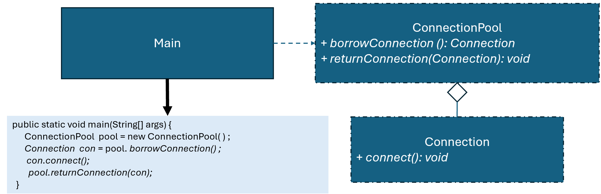

優點
缺點
總評
本次互動以任務描述與自身整理為主，屬於“表層修正”型，部分有自我解釋與簡易監控（TO、CE、RQ略有展現），但缺少主動追問、驗證或與AI的多元交流，整體互動品質為基礎~中等，尚有明顯提升空間。
Warning: This connection was not borrowed from the pool.所以我該new嗎還是throwexpention?
我一直好奇之前都用linkedlist現在卻用queue到底我該用誰還是我高興就好畢竟操作方式都一樣
import java.util.*;
class Connection {
public void connect() {
System.out.println("Connected successfully.");
}
}
class ConnectionPool {
private LinkedList pool = new LinkedList<>();
private Set using = new HashSet<>();
public ConnectionPool(int maxSize) {
for (int i = 0; i < maxSize; i++) {
pool.add(new Connection());
}
}
public Connection borrowConnection() {
if (!pool.isEmpty()) {
Connection connection = pool.removeFirst();
using.add(connection);
return connection;
}
return null;
}
public void returnConnection(Connection conn) {
if (!using.contains(conn)) {
System.out.println("Warning: This connection was not borrowed from the pool.");
} else {
pool.add(conn);
using.remove(conn);
}
}
}
public class Main {
public static void main(String[] args) {
ConnectionPool pool = new ConnectionPool(1);
Connection conn1 = pool.borrowConnection();
conn1.connect();
pool.returnConnection(conn1);
pool.returnConnection(conn1);
}
}
!@#$報告
新設計有何優點?
我一開始先建立固定數量的 Connection 放進 pool，這部分和一般物件池一樣。但這裡多了一個 using（HashSet），專門記錄「目前被借出去的連線」。只要有 borrowConnection()，就會同時把該物件放進 using。
在歸還時，程式不會直接把 connection 放回 pool，而是先檢查它有沒有在 using 裡。如果有，代表這是正常借出去的資源，就放回 pool 並從 using 移除；如果沒有，就印出 warning，表示這個物件來源不對或已經還過。
用 main 的流程看會比較清楚：
pool 大小是 1
先 borrow → conn1 進 using
第一次 return → 正常，conn1 回 pool
第二次 return → conn1 不在 using → 顯示 warning
這樣可以抓到兩種常見錯誤：一種是重複歸還，同一個物件被放回 pool 兩次；另一種是把不是從 pool 拿的物件丟進來。這兩種情況如果不檢查，pool 內容會被污染，後面拿到的資源可能就不可靠。
整體來看，這個設計是在原本物件池的基礎上，加了一層簡單的「合法性檢查」。寫法不複雜，但可以避免一些很難追的 bug，尤其是在程式變大之後，這種檢查會變得很有價值。!@#$
修改 ConnectionPool 類別，防止同一個物件被多次歸還，導致池內有重複物件。
請檢視程式碼介面是否違反 Object Pool 模式，並撰寫報告，討論新設計有何優點?

public class Main {
public static void main(String[] args) {
ConnectionPool pool = new ConnectionPool(1);
Connection conn1 = pool.borrowConnection();
conn1.connect();
pool.returnConnection(conn1);
pool.returnConnection(conn1);
}
}
並修改其他程式，使得執行輸出：